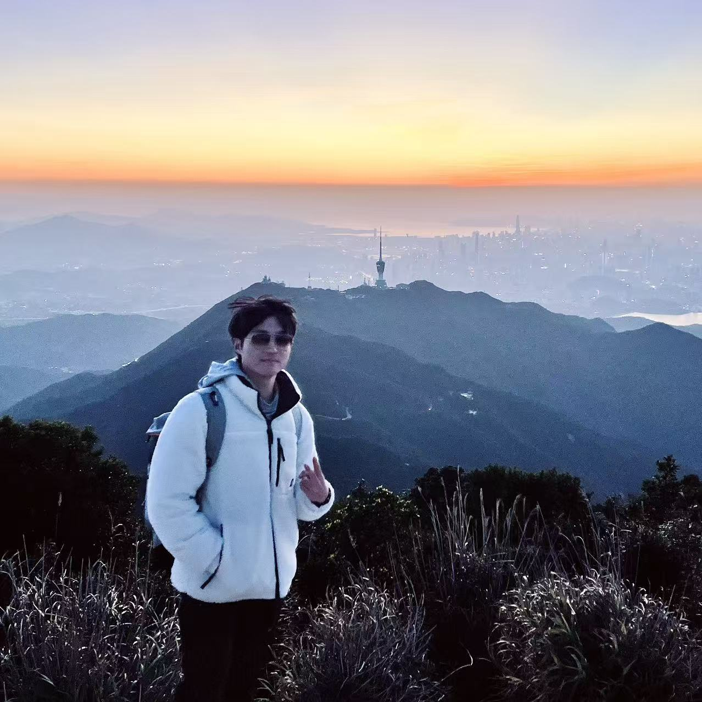

|
Jiaxiao Shi | 史家箫 I am currently a Ph.D. student at MarsLab, Nanyang Technological University, advised by Prof. Jianfei Yang. Previously, I received my B.Eng. from Harbin Institute of Technology, where I worked at the State Key Laboratory of Robotics and System under the supervision of Prof. Hong Liu. I was also interned at Fast-Fire, Zhejiang University, advised by Dr. Yanjun Cao, and at Beijing Institute for General Artificial Intelligence (BIGAI), advised by Dr. Tengyu Liu and Dr. Siyuan Huang. My previous research interests included robotic planning and optimization, autonomous vehicles and aerial robotics. I now focus on dexterous hands and robotic manipulation. |
 |
{kind=link}
News
- [2026/08] 🎉 The official website of ECO and the v2 version of arXiv are now online!
- [2026/07] 🎉 TeleDexter was accepted to the 4th RSS Workshop on Dexterous Manipulation!
- [2025/08] 🎉 ECO is now available on arXiv!
Publications
Selected publications are highlighted.
 |
arXiv, 2026
TeleDexter is a learned low-level co-tracking controller for dexterous robot hands, trained in simulation and deployed zero-shot for contact-rich teleoperation tasks. |
 |
arXiv, 2026
ECO is a nature-inspired metaheuristic for non-convex global optimization, evaluated on standard benchmark suites and constrained engineering design problems. |
Experience
|
Nanyang Technological University, Singapore 2026.06 – Present Ph.D. in School of Mechanical and Aerospace Engineering MarsLab Dexterous manipulation. |
|
|
Beijing Institute for General Artificial Intelligence (BIGAI) 2025.11 – 2026.05 Research Intern Dexterous hand teleoperation. |
|
|
Zhejiang University Huzhou Institute, China 2023.12 – 2024.02 Research Intern Fast-Fire Lab Ground-air amphibious quadrotor UAVs. |
|
|
Harbin Institute of Technology, China 2021.09 – 2025.06 B.Eng in School of Future Technology State Key Laboratory of Robotics and System Robotic planning and optimization, autonomous vehicles and motor control. |